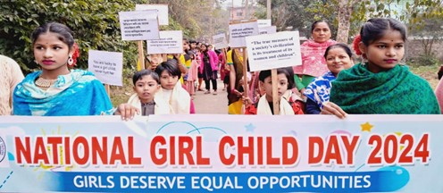
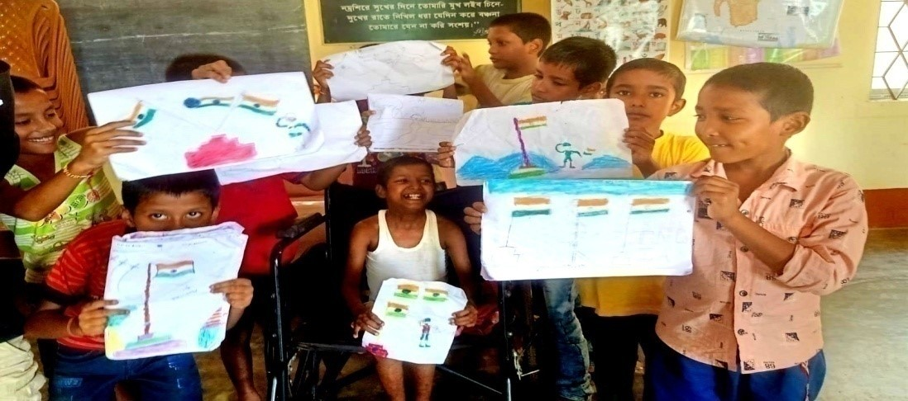
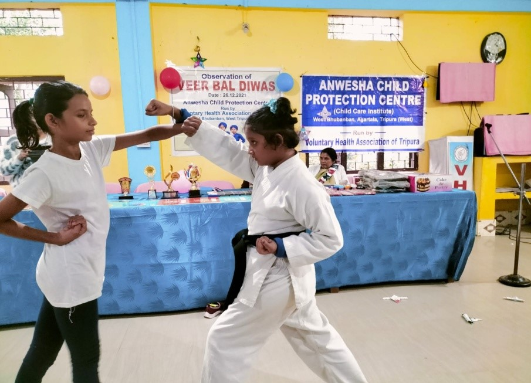

CARE & PROTECTION of
CHILDREN
- ♦ CHILDLINE
Agartala
- ♦ CHILDLINE
Sepahijala
- ♦ Anwesha Child
Protection
Centre-Open
Shelter for
Girls & Boys
- ♦ Anwesha
Children’s
Home for Girls
- ♦ Unmesh Children
Home for Boys
- ♦ Manorama Shishu
Niketan-Children’s
Home for Girls
- ♦ Family Based
Alternative Care of
Children in need
- ♦ Campaign for
Child Marriage
Free India


Children in Unmesh Children’s Home for Boys

Observation
of Veer Bal
Diwas
CHILDLINE Agartala
As collaborative organization VHAT initiated CHILDLINE Agartala project with support from Ministry of
Women and Child Development through CHILDLINE India Foundation in the year 2003 .
Activities during the FY 2023-2024 (April 2023 to August 2023):-
Case Intervention :-82 cases as below -
Medical help : 01 , Shelter: 18 , Protection from abuse (Rescue) 38, Missing Child 11 , Emotional Support &
Guidance 2 , Others 12 .
Number of Weekly Meetings organized by Team Members: 15
Matter discussed:-CHILDLINE (1098) activities in detail, prevention of child marriages, prevention of child
labor, prevention of child sexual abuses, rescue of child from crisis situation etc.
Method used: face to face conversation, brain storming, role play. Materials used: leaflets,
banners, placing
CHILDLINE hoarding in the places.
Using social media to aware people about CHILDLINE.
Reach out more number of people in slum areas.
Detail discussion on use of Psychological Support System manual.
Number of Awareness Meetings conducted: 10. In these meetings discussion was on CHILDLINE 1098
activities in details, awareness on prevention of Child marriage, Child Labor, Child Sexual abuse . These
meetings included community meeting , panchayat meeting, ASHA & Anganwadi meeting, CDPO meeting,
NSS meeting in different parts of West Tripura District all through the year.
Number of Open House organized: 03. Issues and problems mentioned by the children during open house
were: Child Marriage, problem of drop outs,
and economic inability of parents, Child Labour, child sexual abuse, bad touch & good touch.
Innovative Activities : Observation of World Environment Day on 5/6/23, Special programme on World
Tobacco Day on 31/5/23.

One day old abandoned baby rescued by CHILDLINE
Agartala

Community meeting organized by CHILDLINE Agartala
CHILDLINE SEPAHIJALA
Activities in 2023-2024 (April 2023 to August 2023):-
Case Intervention - Total number of intervention cases were 48, which were as below:-
Shelter : 05 , Restoration: 11 , Protection from abuse(Rescue) 16 , Sponsorship: 09, Other
intervention:07
Eight Weekly meetings were organized by Team Members .Method used- face to face meetings & small group
discussion. Materials used-leaflets & banners. Use of social media to aware the people about CHILDLINE’s
activities.
CHILDLINE Sepahijala (collab) conducted 21 events as awareness activities to discuss about CHILDLINE in
details, prevention of child marriage, child labour, child sexual abuse. These meetings included community
meetings, Meetings with panchayat member, ASHA & Anganwadi workers , CDPOs NSS Volunteers in different
parts of Sepahijala district.
Three Number of Open House conducted in different school and communities to discuss the issue of child
marriage, problems of school drop outs, economic inability of parents child labour, child sexual abuse , bad
touch
& good touch.
Anwesha Child Protection Centre-Open
Shelter for children
In the year 2005 Anwesha Child Protection Centre, an Open Shelter for children in need of emergency shelter,
was started by Voluntary Health Association of Tripura since 2005. When the number of children was increased,
this open shelter was divided in two sections-Open Shelter for Girls (for 25 girls) and Open Shelter for
Boys(for 25 boys). Later on these shelters have been registered under Social Welfare Department as per
Juvenile Justice Act, under Ministry of Women & Child Development. In 2023-2024 on an average, there
were 27 girl children in Open Shelter Girls and 26 boys in Open Shelter for Boys.
The Open Shelters provided an enriched platform for learning that empowers the children not only to get
education but also to develop their self-confidence and self-esteem. It provided services such as education,
nutrition, knowledge of computer. Life Skill Education and vocational training.
Target Groups : Children of 5-18 year age group of the following categories were the
beneficiaries of this project.
Orphaned Children
Street children (rag pickers, baggers, etc), victims of any drug addictions.
Abandoned Children.
Victims of violence/abuse.
AIDS victim.
Any child eligible for getting emergency services.
The children were guided by House Parents, In-charge, GNM nurse and two Social Workers. They were
supported with extra coaching teachers. Apart from educational support, the children were provided with
computer lab to enhance their computer knowledge in extracurricular activities . Life Skill Education training
also
organized for the children based on their appropriate age . Children observed all the national days with
cultural activities.
Medical Care and services provided for children :
Monthly height-weight measurement and record maintenance.
Quarterly detail health check-up and treatment.
Quarterly hemoglobin test.
Regular Dental check-up and treatment.
Hearing test.
Vision test.
Emergency medical care.
Apart from providing emergency care and protection, the Open Shelters were linked with a specialized adoption
agency, through which the home can give the children for adoption who were registered under CARA.

On the Republic Day 26-01-2024

On Veer Bal Diwas, 26-12-2023 a child was awarded as
winner in Drawing Competition
Anwesha Children Home for Girls
Anwesha Children Home for Girls a registered CCI under the J.J. Act , Ministry of Women & Child Development
for 50
girl children. It provides long term shelter for orphaned and underprivileged girls till completion of 18
years of age. The
mission of this CCI was to rescue and protect children from the trauma of physical and sexual abuse, extreme
neglect,
being abandoned and being a victim or witness of domestic violence.
Children were provided shelter, nutrition, education, basic computer knowledge, recreation, medical support
and life skill
education. To provide a variety of experiences to children, Anwesha Home had undertaken activities like free
and
structured conversation, rhymes, songs, story-telling, story making, music and movement, dramatization, indoor
play
activities with blocks, beads, puzzles, clay modeling, outdoor games and outdoor activities including free
play running,
jumping, hopping, balancing, sand play and gardening. First issue of wall magazine “Anweshon” was show-cased
by the
children on 15
th August 2023 . All the stories, poems and drawings were written by the children by their own efforts for
this wall magazine
Children were involved in following activities:
Education –children are attending regular classes in nearby school.
Household chores which help children learn about what they need to do to care for themselves, a home and a
family.
Counseling – Peer counseling in individual situations.
Training & Capacity building –it encourages the leadership of non-profit to evaluate their abilities to
perform in a
complex environment.
Life Skill training – decision-making, creative thinking, interpersonal relationship skills, self-awareness
building skills,
empathy and coping with stress and emotions.
Co-curricular activities-dance, yoga, meditation, painting competitions as well as other recreational
activities
Pre-Vocational Training – in stitching and handicrafts, Agriculture and animal rearing
Computer Education .
Engaging children in meaningful activities was the pivotal part of the program e.g preparing wall magazine,
psychosocial
activities that improved personal and social skills, alternative learning, physical activities, games and fun!
Medical Care and Services provided:Individual medical file was maintained for all the children. Following
were the
medical services provided to the children.
Monthly height-weight and BMI record keeping.
Immunization, Quarterly Hemoglobin test.
Monthly Health Check-up and treatment.
Annual Dental and ENT check-up. Vision Test. Emergency Medical care.
Counseling & psychosocial interventions for adolescent - girls
In the year 2023-2024, the children of Anwesha Children’s Home & Anwesha Open Shelters jointly celebrated and
enjoyed the following occasions :-
Observation of World Health Day - 7
th April,2023 with help of MO & Health Workers of West Bhubanban, UPHC.
Celebration of Bengali New Year - 15th April, 2023.One local donor distributed fruits and sweets
packets among
all children and staff in this occasion .

During the Sports Festival in Anwesha Open Shelter for
Boys

Girl children in the Sports Festival
Azadi ka Amrit Mahotsav was celebrated through Sports Festival during the period from 17th to 28th
April
2023. Sports items included - Indoors games- Carom, Ludo, Chinese checkers, and Yoga. Outdoor games: Volley
ball, Kabbadi, Frog Race, 50 meters race, Biscuit race, Ball throw and Musical Chair.
Rabindra Jayanti- Celebration of birth day Rabindranath Tagore:- On 9
th May 2023, discussion was about Tagore’s
life. Different cultural activities were performed by children. Children participated in essay & quiz
competitions. Prizes
were given to 1st,2nd & 3rd position holders.
International Mother's Day 2023: On 14th May,2023 , Anwesha Home celebrated it to show gratitude and
respect
to mothers/care givers of CCIs for their love, care, and guidance. All children made greetings for their
respective house
mothers and discussed about the importance of mother in our life. The children performed dance and song to
celebrate
bonding and attachment with their mothers.
World Environment Day on 5th June – discussion with the children was about the importance of
pollution free
environment and the harmful effects of plastic, use eco-friendly things to keep our environment plastic free.
Children
along with all staff planted trees in the CCI complex
International Yoga Day on 21st June 2023: The theme was “ Yoga for Vasudhaiva Kutumbakam” i.e,. Yoga
for the
welfare of all in the form of ‘One world –One Family’. Yoga teacher Rinky arranged the demonstration of
various
asanas, pranayama and practices by the children.

Children were exhibiting their Yoga practice

Wall magazine "Anweshon"-1st issue
Independence Day - On August 15, 2023.
Teacher’s Day on 5th September, 2023
World Mental Health Day : In collaboration with Tripura State Psychiatrist Hospital this day was
celebrated on 10th
October 2023
SWACHHATA HI SEVA-16th
-31st October, 2023
Veer Bal Diwas -26th December, 2023
Children’s Day: On 14th November,2023 , it was celebrated with great joy by organizing a drawing
competition among
the children.
Christmas Day: On 25th December, 2023 our children decorated the entire campus by making their own
stars,
Christmas tree and making cakes to celebrate Christmas themselves. ONGC staff conducted a fire extinguisher
training
with children and staff . ONGC staff also distributed cakes and sweets to all children .
National Youth Day-12th January, 2024 on the occasion of Swami Vivekananda’s birth day Mrs Shikha
Saha ,
VHAT President discussed about the life story of Swami Vivekananda & role of youth in development of our
nation
followed by dance event by the children .
Makar Sankranti on 15th January ,2024 Children Drew rangoli, had homemade pitha -payesh, chicken &
fish
curry
Netaji Subhash Chandra Bose’s Birthday : On January 23rd ,2024 , we hoisted the National Flag at 7.00
am. In the
afternoon a yoga competition among all the children was conducted followed by prize distribution ceremony .
Saraswati Puja celebration was on 14th February , 2024 .
International Women’s Day : On 8th March, 2024

Making
Rangoli
in Makar
Sankranti
Unmesh Children Home for Boys
Unmesh Children Home for Boys is situated in East Gokulnagar, Sepahijala District. The home was started from
September 2018 It was registered under Juvenile Justices Act-2015, under Ministry of Women and Child
Development on 7
th June,2019 . During the 2023-2024, 50 children were staying on an average in the home who
came with the order from CWC of different districts of Tripura. Out of them 47 Children admitted in Purba
Gokulnagar HS School. All the Children were engaged in different co-curricular activities like yoga, sports,
gardening, music, drama and drawing .
Class wise number of the children: Anganwadi Centre- 1,Class-1: 3, Class-II: 8, Class-III: 5,
Class-IV:
2, Class-V: 10, Class-VI: 5, Class-VII: 5, Class-VIII: 3, Class-IX: 2, Class-X : 3
Regular monthly health check-up and treatment to all the children were provided by Medical team of
Bishalgarh Hospital. One residential GNM (Nurse) was taking care of the health of the children.
Home visit & reintegration : This year, 11 children were reintegrated to the families or extended
families after
the social investigation of the family situation and counseling of both children and family members and two
children were sent to foster parents in two childless families.The SIRs(social investigation reports) and
counseling were done by the Case Worker and the Counselor of the CCI. Shifting and reintegration was done
with the orders from the Child Welfare Committees.
Celebration of important days in 2023-24: 26th- 28th April2023- Sports Festival ,21st June 2023- Yoga
Day, 28th July 2023-World Hepatitis Day , 15th
August 2023- Idependence Day,5th September 2023- Teachers Day,2nd October2023- Gandhi Jayanti,16th
October 2023- Campaign against Child Marriage, 28th October 2023- Laxmi Puja, 31st Oct 202National Unity
Day (birth anniversary of Sardar Ballav Bhai Patel), 12th November 2023- Diwali Celebration ,14th November
2023- Children's Day celebration, 26th December 2023-Veer Bal Diwas ,12th January 2024- Observation of
Swami Vivekananda's Birthday,23rd January 2024- Netaji's Birthday , 24th January2024- National Girl Child
Day,26th January2024- Republic Day,14th February2024- Saraswati Puja.

Members of CWC ,Sepahijala District visited Unmesh Home
during Sports Festival

Health Checkup in Unmesh Home by Doctors of
CMO office of Sepahijala District

During the Sports Festival in Anwesha Open Shelter for
Boys

International Yoga Day 2023
Manorama Shishu Niketan-Children’s home
for Girls
Manorama Shishu Niketan - Children's Home for Girls situated at Vill & P.O - Lowgang, P.S. - Santirbazar,
Sub-Division - Santirbazar, South Tripura District . It is registered with capacity of 50 children. During the
year
2023-2024, on an average 39 children were staying in Manorama Shishu Niketan from various districts of
Tripura according to the order from different Child Welfare Committees. All the children were enrolled in
government schools viz. West Lowgang SB School and West Bakafa H.S School. Along with formal school
education the children learnt practicing Yoga , exposed to training in dancing & singing from trained teachers.
Our capable staffs always try to boost their confidence by individual or group counseling. Unlike other CCIs ,
the targeted children for Manorama Home are the Children of 5-18 year age group of the following categories -
Orphaned Children.
Victims of violence/abuse.
Street children (rag pickers, baggers, etc), victims of any drug addictions.
Abandoned Children.
POCSO victims.
HIV / AIDS victim
Children of ManoramaShishuNiketan celebrated the following days throughout the year:-
On 26th- 28th April2023- Sports Festival,9th May2023- Ravindra Jayanti,21st June 2023- Yoga Day,
15th August 2023- Independence Day,5th September 2023- Teachers Day,2nd October2023- Gandhi
Jayanti,16th October 2023- Campaign against Child Marriage, 28th October 2023- Laxmi Puja,12th November
2023- Diwali Celebration ,14th November 2023- Children's Day celebration,17th December 2023- Educational
Tour to Trishna Wild Life Sanctuary,26th December 2023-Veer Bal Diwas ,12th Januar 2024- Observation of
Swami Vivekananda's Birthday,23rd January 2024- Netaji's Birthday ,24th January2024- National Girl Child
Day,26th January2024- Republic Day,14th February2024- Saraswati Puja,28th February2024- Manorama Shishu
Niketan's 2nd Year Anniversary celebration.
Nutritional support: The children were provided three meals a day and breakfast & evening snacks
(biscuits,
puffed rice banana, sprouted peas etc.) twice a day.
Medical Care and Services : ASHA workers & Community Health Officer visited the children on regular
basis. The full time residential nurse engaged in the Home continuously looking after the children’s health
issues. In case of emergency , children are taken to the South Tripura District Hospital which is in 10
minutes
distance from Manorama Home. Our Paramedical staff always kept track record of children’s height & weight.
Maintenance of individual case file to address the necessities of each children like counseling,
behavioral
problems and socially deviant behaviors.
Entertainment facility: Facility for indoor games like ludo, carom,chinese checker,& volley ball .
Home visit: We have been doing detail investigation of inmate’s family situation, checking the
possibilities if
we can reintegrate them into the family and prepared the SIR(social investigation report).
Reintegration: After the home visit and proper assessment in 2023-2024, one child was given to the foster
parents & 7(seven) children were reintegrated with their families/ distant families.

Rally by Children of Manorama Sheshu Niketan on the
occasion of ‘Girl Child Day’-24-01-2024

Educational Tour of Children of Manorama Sheshu Niketan
on 17th December,2023
Family Based Alternative Care of
Children in need
This was an organized effort of VHAT for reintegration of children in their family or in extended family .
Social
investigation was done of the families of children who were staying in the CCIs/Homes, by visiting their
families
and preparing the social investigation reports. If the possibility of reintegration was there, we placed the
report to
CWC. After further verification we did the integration with permission from the CWC. We were doing the
follow up and helping the reintegrated children for their study and income generation of their guardians and
overall development of the children keeping them within the family. This project was supported by
The Miracle
Foundation India. We worked as per the UN Guidelines for Alternative Care of Children, where it stated
that:
“Family is the fundamental group of society and the natural environment for the growth, well-being and
protection of children, and efforts should be primarily directed to enabling the child to remain in or return to
the
care of his/her parents, or when appropriate, other close family members.”
Approach/strategy:
Home visits and family crisis intervention: regular visits to the homes of children placed in our
care(CCIs) to
assess family dynamics and address any crises or challenges they may be facing. Through working closely with
families to resolve issues and our aim was to create a conductive environment for child’s return.
Social investigation Reports: through investigations to understand the root causes of family
separation and
identify the necessary interventions to facilitate reintegration, the report was prepared.
Five well-being domains: We focused on five key domains of family well-being: Economic stability,
access
to education and health care, social support networks, safe and stable housing and emotional well-being.
Continuous Follow- Up and Family Support: Our commitment to reintegration extends beyond the
initialization process.
Mental Health focus: this included counseling, therapy and psychosocial support to promote healing,
resilience and positive mental health outcomes.
Community Awareness Program: We are committed to raising awareness within communities about the
importance of family-based care for children, through workshops, seminars and outreach initiatives. Another
aim was to educate people in the community about the benefits of various government schemes for providing
benefits to the children. In 2023-24 , we organized 23 Community Awareness Meetings with totally 364 people
in West Tripura , Khowai & Sepahijala District.

Community Meeting on FBAC

Meeting with ASHA Workers on FBAC
Prevention of Institutionalization: It was aimed to keep children within their families or place them
in
alternative family-based care arrangements.
Gate keeping: By identifying vulnerable families early on, we try to provide them with necessary
support
and resources to prevent the unnecessary placement of children in institutions.
Awareness program with Adolescents: We conduct targeted awareness programs with adolescents to
address issues such as Child Marriage and other forms of exploitation as per the Protection of Children from
Sexual Offences (POCSO) Act.

Meeting in Anganwadi Centre to discuss the importance of
FBAC

Awareness Campaign for ‘Child Marriage Free India ‘ with
Community people & ASHA Workers
Reporting Mechanisms: We facilitated reporting mechanisms for community members to report cases of
child abuse, neglect or exploitation through help lines, online platforms, and community- based reporting
systems.
Child Participation:Children were involved in decision -making processes that affect their lives.
Attempts
were to empower children to express their views, preferences and concerns, ensuring that their voices were
heard and respected.
Conclusion : In Anwesha Home, Unmesh & Manorama Shishu Niketan , run by VHAT , our comprehensive
approach to child reintegration encompassed proactive family engagement, targeted interventions and ongoing
support to ensure that children were reintegrated into safe, loving and stable family environment. By prioritizing
family well-being and mental health, we strived to facilitate successful and sustainable reunifications that enable
to children to thrive within their families. VHAT , through this FBAC project could provide livelihood support to
three families for cloth selling and fast food business. Four parents got psychological counseling and parenting
skill training. !n 2023-24 we could reintegrate 43 children from five CCIs run by VHAT.
Campaign for Child Marriage Free India
Child marriage remains a grave concern in our society, a practice that not only deprives children of their rightful
childhood but also poses long-lasting repercussions on their lives. According to the fifth National Family Health
Survey conducted between 2019 and 2021, a staggering 23.3% of girls between the ages of 20 and 24 are
married before reaching the legal age of 18 years. This statistic serves as a stark reminder of the urgent need for
collective action to address this issue.
Being encouraged by Kailash Satyarthi Children's Foundation VHAT agreed to join a campaign “Child Marriage
Free India” on Monday, the 16th of October 2023, aims to eliminate child marriage in India by 2030, thereby
saving 1.5 million girls getting married each year. The campaign was being run with the focus on implementing
the existing government policies and laws in the country that ensure child protection, health and education.
VHAT and its network organization organized this campaign in Tripura in all eight districts on the same day.

Awareness
Campaign for
‘Child
Marriage Free
India ‘ with
School
Adolescents in
Durjoynagar ,
West Tripura
District